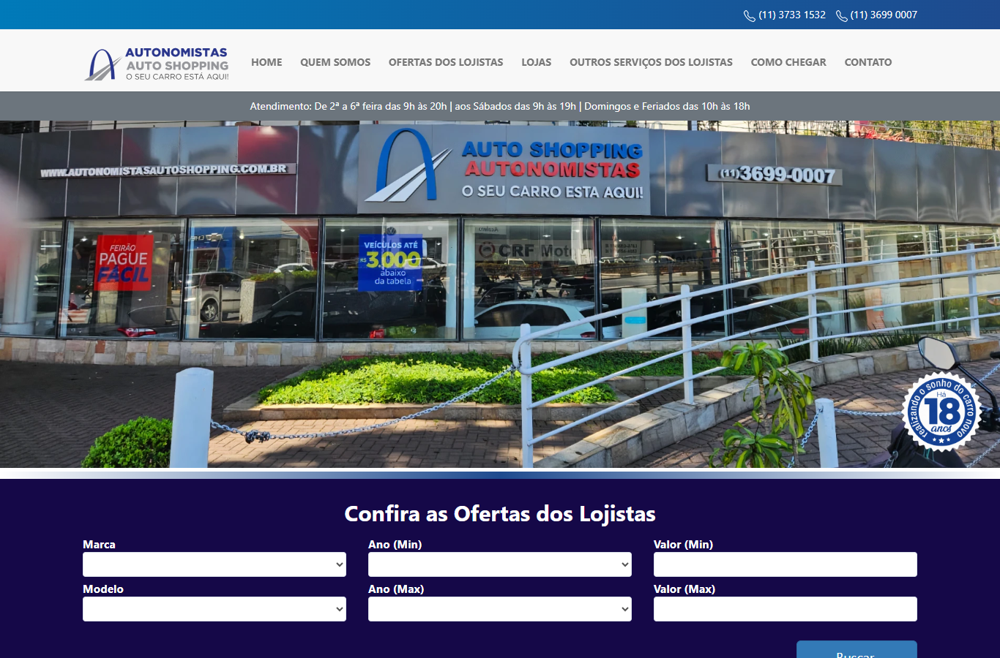
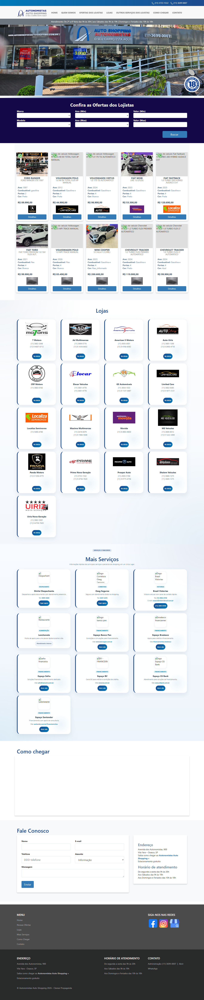

SIMIO · dossiê de candidato · campanha simio-20261119-174043-8bbc · gerado em 2026-11-19T21:22:03+00:00
https://autonomistasautoshopping.com.br/
REVIEW_REQUIRED Prioridade MEDIUM · Cenário B_AMBIGUOUS_COMMUNICATION · Revisão humana: PENDING
Este dossiê apresenta indícios para apoio à auditoria. Não constitui conclusão regulatória. As conclusões automatizadas devem ser verificadas contra as evidências brutas abaixo (screenshots, catálogo e arquivos com hash). Conteúdo de terceiros é exibido como texto; links não são clicáveis por segurança.
Trata-se do site institucional e catálogo de ofertas do 'Autonomistas Auto Shopping', um shopping de automóveis multimarcas em Osasco/SP. A menção ao Banco BV ('Espaço BV') ocorre de forma estritamente informativa e secundária, abaixo da dobra, em uma grade de 'Serviços e Parceiros' ao lado de outros cinco bancos concorrentes (Banco Pan, Bradesco, Safra, C6 Bank e Santander), com link apontando para o site oficial bv.com.br. Enquadra-se perfeitamente no cenário A_LEGITIMATE_COMMERCIAL_MENTION (contexto multimarcas/multibancos sem confusão de autoria).


| Ref | Tipo | Local | Conteúdo |
|---|---|---|---|
| E-URL | domain | url | URL final: https://autonomistasautoshopping.com.br/ (domínio: autonomistasautoshopping.com.br) |
| E-DISC-001 | text | search_index | Índice de busca (grounding): autonomistasautoshopping.com.br — **Autonomistas Auto Shopping (Página de Serviços / Google Meu Negócio)** | **Fonte:** `autonomistasautoshopping.com.br` | **Evidência na página:** Apresenta em seu diretório de serviços a seção **"BV - FINANCEIRA / Espaço BV"** descrita como *"Canal BV para análise e condições de crédito"* dentro do estabelecimento comercial em Osasco/SP, acompanhado de atalhos para o perfil de Google Meu Negócio e WhatsApp da administração local |
| E-SHOT-VIEWPORT | screenshot | viewport | evidence\C896da82f86\attempt-1\viewport.png (sha256 ecdeca22be861363…) |
| E-SHOT-FULL | screenshot | page | evidence\C896da82f86\attempt-1\fullpage.png (sha256 86b3ba15a50ff8f8…) |
| E-TITLE | title | head | Autonomistas Auto Shopping |
| E-META-1 | meta | head | description: O melhor e verdadeiro auto shopping de osasco e região. |
| E-META-2 | meta | head | og:site_name: Autonomistas Auto Shopping |
| E-META-3 | meta | head | og:title: Autonomistas Auto Shopping |
| E-META-4 | meta | head | og:description: O melhor e verdadeiro auto shopping de osasco e região. |
| E-CANONICAL | meta | head | https://autonomistasautoshopping.com.br/ |
| E-HEAD-1 | heading | page | Confira as Ofertas dos Lojistas |
| E-HEAD-2 | heading | page | FORD RANGER FORD RANGER STX 1997 |
| E-HEAD-3 | heading | page | VOLKSWAGEN POLO 1.6 MI 8V TOTAL FLEX 4P MANUAL |
| E-HEAD-4 | heading | page | VOLKSWAGEN VIRTUS 1.0 170 TSI AUTOMÁTICO |
| E-HEAD-5 | heading | page | FIAT MOBI LIKE 1.0 (FLEX) |
| E-HEAD-6 | heading | page | FIAT FASTBACK 1.0 TURBO 200 HYBRID AUDACE CVT |
| E-HEAD-7 | heading | page | FIAT TORO FIAT TORO FREEDOM 1.8 16V FLEX AUT. |
| E-HEAD-8 | heading | page | VOLKSWAGEN POLO 1.0 MPI TRACK MANUAL |
| E-HEAD-9 | heading | page | MINI COOPER S E ALL4 1.5 (HÍB.) |
| E-HEAD-10 | heading | page | CHEVROLET TRACKER 1.2 TURBO FLEX PREMIER AUTOMÁTICO |
| E-HEAD-11 | heading | page | CHEVROLET TRACKER 1.0 TURBO FLEX LT AUTOMÁTICO |
| E-HEAD-12 | heading | page | Lojas |
| E-HEAD-13 | heading | page | 7 Motors |
| E-HEAD-14 | heading | page | Ad Multimarcas |
| E-HEAD-15 | heading | page | American 5 Motors |
| E-HDR | text | header | (11) 3733 1532 (11) 3699 0007 HOME QUEM SOMOS OFERTAS DOS LOJISTAS LOJAS OUTROS SERVIÇOS DOS LOJISTAS COMO CHEGAR CONTATO Atendimento: De 2ª a 6ª feira das 9h às 20h | aos Sábados das 9h às 19h | Domingos e Feriados das 10h às 18h |
| E-FOLD | text | viewport (acima da dobra) | (11) 3733 1532 (11) 3699 0007 Home Quem Somos Ofertas dos Lojistas Lojas Outros Serviços dos Lojistas Como Chegar Contato Atendimento: De 2ª a 6ª feira das 9h às 20h | aos Sábados das 9h às 19h | Domingos e Feriados das 10h às 18h Confira as Ofertas dos Lojistas Marca Modelo Ano (Min) Ano (Max) Valor (Min) Valor (Max) Buscar |
| E-FTR | text | footer | MENU Home Nossas Ofertas Lojas Mais Serviços Como Chegar Contato SIGA-NOS NAS REDES ENDEREÇO Avenida dos Autonomistas, 900 Vila Yara - Osasco, SP Saiba como chegar ao Autonomistas Auto Shopping « Estacionamento gratuito HORÁRIO DE ATENDIMENTO De segunda a sexta das 9h às 20h Aos Sábados das 9h às 19h Aos Domingos e Feriados das 10h às 18h CONTATO Administração: (11) 3699-0007 | Abrir WhatsApp © Autonomistas Auto Shopping 2026 - Clarear Propaganda |
| E-NAV | nav | header | (11) 3733 1532 <tel:+55-11-37331532> | (11) 3699 0007 <tel:+55-11-36990007> | <https://autonomistasautoshopping.com.br/> | HOME <https://autonomistasautoshopping.com.br/> | QUEM SOMOS <https://autonomistasautoshopping.com.br/quem-somos> | OFERTAS DOS LOJISTAS <https://autonomistasautoshopping.com.br/estoque/lista> | LOJAS <https://autonomistasautoshopping.com.br/#lojas> | OUTROS SERVIÇOS DOS LOJISTAS <https://autonomistasautoshopping.com.br/#servicos> | COMO CHEGAR <https://autonomistasautoshopping.com.br/#comochegar> | CONTATO <https://autonomistasautoshopping.com.br/#contato> |
| E-CTA-1 | cta | page | Buscar |
| E-CTA-2 | cta | page | Detalhes <https://autonomistasautoshopping.com.br/estoque/detalhe/318613696> |
| E-CTA-3 | cta | page | Detalhes <https://autonomistasautoshopping.com.br/estoque/detalhe/17699309> |
| E-CTA-4 | cta | page | Detalhes <https://autonomistasautoshopping.com.br/estoque/detalhe/7693088> |
| E-CTA-5 | cta | page | Detalhes <https://autonomistasautoshopping.com.br/estoque/detalhe/303826848> |
| E-CTA-6 | cta | page | Detalhes <https://autonomistasautoshopping.com.br/estoque/detalhe/295728944> |
| E-CTA-7 | cta | page | Detalhes <https://autonomistasautoshopping.com.br/estoque/detalhe/151158492> |
| E-CTA-8 | cta | page | Detalhes <https://autonomistasautoshopping.com.br/estoque/detalhe/295564473> |
| E-CTA-9 | cta | page | Detalhes <https://autonomistasautoshopping.com.br/estoque/detalhe/303902274> |
| E-CTA-10 | cta | page | Detalhes <https://autonomistasautoshopping.com.br/estoque/detalhe/19703698> |
| E-CTA-11 | cta | page | Detalhes <https://autonomistasautoshopping.com.br/estoque/detalhe/7700155> |
| E-CTA-12 | cta | page | Enviar |
| E-CONTACT-1 | contact | header | (11) 3733 1532 <tel:+55-11-37331532> |
| E-CONTACT-2 | contact | header | (11) 3699 0007 <tel:+55-11-36990007> |
| E-CONTACT-3 | contact | page | Panda Motors <https://api.whatsapp.com/send?phone=5511913564775&text=Gostaria%20de%20saber%20mais%20detalhes%20do%20ve%C3%ADculo%3A%20Ford%20Ranger%20%20ford%20ranger%20stx%201997> |
| E-CONTACT-4 | contact | page | Limited Cars <https://api.whatsapp.com/send?phone=5511916772121&text=Gostaria%20de%20saber%20mais%20detalhes%20do%20ve%C3%ADculo%3A%20Volkswagen%20Polo%20%20%201.6%20MI%208V%20TOTAL%20FLEX%204P%20MANUAL> |
| E-CONTACT-5 | contact | page | Auto Uiriz <https://api.whatsapp.com/send?phone=5511939504718&text=Gostaria%20de%20saber%20mais%20detalhes%20do%20ve%C3%ADculo%3A%20Volkswagen%20Virtus%20%20%201.0%20170%20TSI%20AUTOM%C3%81TICO> |
| E-CONTACT-6 | contact | page | Movida <https://api.whatsapp.com/send?phone=5511949039830&text=Gostaria%20de%20saber%20mais%20detalhes%20do%20ve%C3%ADculo%3A%20Fiat%20Mobi%20%20Like%201.0%20%28Flex%29> |
| E-CONTACT-7 | contact | page | Localiza Seminovos <https://api.whatsapp.com/send?phone=5511922224683&text=Gostaria%20de%20saber%20mais%20detalhes%20do%20ve%C3%ADculo%3A%20Fiat%20Fastback%20%20%201.0%20TURBO%20200%20HYBRID%20AUDACE%20CVT> |
| E-CONTACT-8 | contact | page | Maxima Multimarcas <https://api.whatsapp.com/send?phone=5511974685648&text=Gostaria%20de%20saber%20mais%20detalhes%20do%20ve%C3%ADculo%3A%20Fiat%20Toro%20%20Fiat%20Toro%20Freedom%201.8%2016V%20Flex%20Aut.> |
| E-CONTACT-9 | contact | page | Localiza Seminovos <https://api.whatsapp.com/send?phone=5511922224683&text=Gostaria%20de%20saber%20mais%20detalhes%20do%20ve%C3%ADculo%3A%20Volkswagen%20Polo%20%20%201.0%20MPI%20TRACK%20MANUAL> |
| E-CONTACT-10 | contact | page | Movida <https://api.whatsapp.com/send?phone=5511949039830&text=Gostaria%20de%20saber%20mais%20detalhes%20do%20ve%C3%ADculo%3A%20Mini%20Cooper%20%20S%20E%20ALL4%201.5%20%28H%C3%ADb.%29> |
| E-CONTACT-11 | contact | page | Uiriz Nova Geração <https://api.whatsapp.com/send?phone=5511947587620&text=Gostaria%20de%20saber%20mais%20detalhes%20do%20ve%C3%ADculo%3A%20Chevrolet%20Tracker%20%20%201.2%20TURBO%20FLEX%20PREMIER%20AUTOM%C3%81TICO> |
| E-CONTACT-12 | contact | page | Auto Uiriz <https://api.whatsapp.com/send?phone=5511939504718&text=Gostaria%20de%20saber%20mais%20detalhes%20do%20ve%C3%ADculo%3A%20Chevrolet%20Tracker%20%20%201.0%20TURBO%20FLEX%20LT%20AUTOM%C3%81TICO> |
| E-CONTACT-13 | contact | page | 3699-5666 <tel:+55-11-36995666> |
| E-CONTACT-14 | contact | page | Ligar agora <tel:+55-11-36995666> |
| E-CONTACT-15 | contact | page | 2447-2205 <tel:+55-11-24472205> |
| E-CONTACT-16 | contact | page | Ligar agora <tel:+55-11-24472205> |
| E-CONTACT-17 | contact | page | (11) 3682-0740 <tel:+55-11-36820740> |
| E-CONTACT-18 | contact | page | osasco@vistoriabrasil.com.br <mailto:osasco@vistoriabrasil.com.br> |
| E-CONTACT-19 | contact | page | (11) 3682-0740 <tel:+55-11-36820740> |
| E-CONTACT-20 | contact | footer | <https://www.facebook.com/AutonomistasAutoShopping> |
| E-IMG-1 | image | header (acima da dobra) | imagem alt='imagem logo Autonomistas Auto Shopping' src=https://autonomistasautoshopping.com.br/img/logo_autonomistas_autoshopping.png (200x46, acima da dobra) |
| E-IMG-2 | image | page | imagem alt='' src=https://autonomistasautoshopping.com.br/img/logos/panda.jpg (52x50, abaixo da dobra) |
| E-IMG-3 | image | page | imagem alt='' src=https://autonomistasautoshopping.com.br/img/logos/limitedcars.jpg (150x50, abaixo da dobra) |
| E-IMG-4 | image | page | imagem alt='' src=https://autonomistasautoshopping.com.br/img/logos/uiriz.jpg (109x50, abaixo da dobra) |
| E-IMG-5 | image | page | imagem alt='' src=https://autonomistasautoshopping.com.br/img/logos/movida.png (96x50, abaixo da dobra) |
| E-IMG-6 | image | page | imagem alt='' src=https://autonomistasautoshopping.com.br/img/logos/localiza.jpg (117x50, abaixo da dobra) |
| E-IMG-7 | image | page | imagem alt='logo Corretora Oseg Seguros' src= (82x82, abaixo da dobra) |
| E-IMG-8 | image | page | imagem alt='logo Brasil Vistorias' src= (82x82, abaixo da dobra) |
| E-IMG-9 | image | page | imagem alt='logo banco pan' src= (82x82, abaixo da dobra) |
| E-IMG-10 | image | page | imagem alt='BV - FINANCEIRA' src= (82x82, abaixo da dobra) |
| E-IMG-11 | image | page | imagem alt='logo Espaço C6 Bank' src= (82x82, abaixo da dobra) |
| E-OFFICIAL-LINKS | link | page | www.bv.com.br <https://bv.com.br/> | Abrir site <https://bv.com.br/> |
| E-TXT-001 | text | page | Atendimento: De 2ª a 6ª feira das 9h às 20h | aos Sábados das 9h às 19h | Domingos e Feriados das 10h às 18h |
| E-TXT-002 | text | page | SERVIÇOS E PARCEIROS |
| E-TXT-003 | text | page | Informações rápidas dos principais serviços e parceiros do shopping, em um único lugar. |
| E-TXT-004 | text | page | Despachos e apoio documental com atendimento presencial. |
| E-TXT-005 | text | page | Seguro com atendimento direto no shopping. |
| E-TXT-006 | text | page | Atendimento interno |
| E-TXT-007 | text | page | Espaço Banco Pan |
| E-TXT-008 | text | page | Site: www.bancopan.com.br |
| E-TXT-009 | text | page | Soluções financeiras e atendimento dedicado. |
| E-TXT-010 | text | page | Espaço BV |
| E-TXT-011 | text | page | Canal BV para análise e condições de crédito. |
| E-TXT-012 | text | page | Atendimento para soluções de financiamento. |
| E-TXT-013 | text | page | Telefone |
| E-TXT-014 | text | page | Endereço |
| E-TXT-015 | text | page | Horário de atendimento |
| E-TXT-016 | text | page | ENDEREÇO |
| E-TXT-017 | text | page | HORÁRIO DE ATENDIMENTO |
| E-TXT-018 | text | page | Administração: (11) 3699-0007 | Abrir WhatsApp |
| Dimensão | Sinal | Achado | Refs |
|---|---|---|---|
| VISUAL_IDENTITY | LEGITIMATE | A página apresenta identidade visual própria do Autonomistas Auto Shopping, com logotipo, cores e foto da fachada do estabelecimento em destaque no topo. | E-SHOT-VIEWPORT E-IMG-1 E-TITLE |
| DECLARED_COMMERCIAL_IDENTITY | LEGITIMATE | O site identifica-se claramente como 'Autonomistas Auto Shopping', localizado em Osasco/SP, reunindo ofertas de diversos lojistas multimarcas. | E-URL E-TITLE E-META-1 E-FTR E-HEAD-12 |
| CORRESPONDENT_TRANSPARENCY | LEGITIMATE | A marca Banco BV aparece em uma seção inferior intitulada 'SERVIÇOS E PARCEIROS' / 'Mais Serviços', ao lado de diversas outras instituições financeiras concorrentes (Banco Pan, Bradesco, Safra, C6 Bank, Santander), caracterizando divulgação legítima de parceiros de financiamento do auto shopping. | E-SHOT-FULL E-TXT-002 E-TXT-003 E-TXT-007 E-TXT-010 |
| INSTITUTIONAL_LANGUAGE | LEGITIMATE | A linguagem utilizada refere-se ao próprio shopping de automóveis e seus lojistas, sem assumir voz institucional do Banco BV. | E-HDR E-HEAD-1 E-TXT-003 E-FTR |
| LOGO_USAGE | LEGITIMATE | A referência visual à BV ('BV - FINANCEIRA') está inserida abaixo da dobra em uma grade de serviços e bancos parceiros, com o mesmo peso visual dado a outros bancos e prestadores de serviço. | E-IMG-10 E-IMG-9 E-IMG-11 E-SHOT-FULL |
| SERVICE_JOURNEY | LEGITIMATE | A jornada principal é a busca de veículos de lojistas do auto shopping. No card 'Espaço BV', o botão 'Abrir site' direciona o usuário diretamente para o domínio oficial do banco (bv.com.br), sem captação enganosa ou oferta de serviços pós-venda em nome da marca. | E-FOLD E-TXT-010 E-TXT-011 E-OFFICIAL-LINKS E-SHOT-FULL |
| CONTACT_CHANNELS | LEGITIMATE | Os contatos de telefone e WhatsApp da página são atribuídos à administração do Auto Shopping ou nominalmente a cada loja de veículos (ex.: Panda Motors, Limited Cars, Movida, Localiza), sem se passar por central do Banco BV. | E-CONTACT-1 E-CONTACT-3 E-CONTACT-6 E-CONTACT-7 E-FTR |
| CONSUMER_CONFUSION | LEGITIMATE | Não há risco de confusão para o consumidor: trata-se claramente do portal de um auto shopping multimarcas que apenas lista o Espaço BV entre múltiplos bancos parceiros disponíveis no local. | E-SHOT-VIEWPORT E-SHOT-FULL E-TXT-002 E-TXT-010 |
Trata-se do site institucional e catálogo de ofertas do 'Autonomistas Auto Shopping', um shopping de automóveis multimarcas em Osasco/SP. A menção ao Banco BV ('Espaço BV') ocorre de forma estritamente informativa e secundária, abaixo da dobra, em uma grade de 'Serviços e Parceiros' ao lado de outros cinco bancos concorrentes (Banco Pan, Bradesco, Safra, C6 Bank e Santander), com link apontando para o site oficial bv.com.br. Enquadra-se perfeitamente no cenário A_LEGITIMATE_COMMERCIAL_MENTION (contexto multimarcas/multibancos sem confusão de autoria).
Nenhum CNPJ ou razão social identificáveis no conteúdo coletado.
| Tipo | Valor | Ref | Contexto |
|---|---|---|---|
| domain | autonomistasautoshopping.com.br | E-URL | |
| osasco@vistoriabrasil.com.br | E-CONTACT-18 | ||
| social_profile | https://www.facebook.com/AutonomistasAutoShopping | E-CONTACT-20 | |
| trade_name | Autonomistas Auto Shopping | E-META-2 | |
| phone | (11) 3733 1532 | E-HDR | |
| phone | (11) 3699 0007 | E-HDR | |
| phone | (11) 3699-0007 | E-FTR | |
| phone | 11-37331532 | E-NAV | |
| phone | 11-36990007 | E-NAV | |
| Índice de busca (grounding): autonomistasautoshopping.com.br — **Autonomistas Auto Shopping (Página de Serviços / Google Meu Negócio)** | **Fonte:** `autonomistasautoshopping.com.br` | **Evidência na | E-DISC-001 | ||
| Panda Motors <https://api.whatsapp.com/send?phone=5511913564775&text=Gostaria%20de%20saber%20mais%20detalhes%20do%20ve%C3%ADculo%3A%20Ford%20Ranger%20%20ford%20ranger%20stx%201997> | E-CONTACT-3 | ||
| Limited Cars <https://api.whatsapp.com/send?phone=5511916772121&text=Gostaria%20de%20saber%20mais%20detalhes%20do%20ve%C3%ADculo%3A%20Volkswagen%20Polo%20%20%201.6%20MI%208V%20TOTAL%20FLEX%204P%20MANU | E-CONTACT-4 | ||
| Auto Uiriz <https://api.whatsapp.com/send?phone=5511939504718&text=Gostaria%20de%20saber%20mais%20detalhes%20do%20ve%C3%ADculo%3A%20Volkswagen%20Virtus%20%20%201.0%20170%20TSI%20AUTOM%C3%81TICO> | E-CONTACT-5 | ||
| Movida <https://api.whatsapp.com/send?phone=5511949039830&text=Gostaria%20de%20saber%20mais%20detalhes%20do%20ve%C3%ADculo%3A%20Fiat%20Mobi%20%20Like%201.0%20%28Flex%29> | E-CONTACT-6 |
Mapeamento indicativo para apoio à auditoria. Não constitui conclusão regulatória; a decisão definitiva pertence à auditoria.
Fonte: NORMATIVE
Art. 14. O contrato de correspondente deve estabelecer: [...] II - vedação à utilização, pelo contratado, de logomarca ou de outros atributos que sejam similares aos adotados pela instituição contratante em suas agências, postos de atendimento, sítio eletrônico na internet, aplicativo ou outras plataformas de comunicação em rede;
Hipótese: Uso de logomarca ou de atributos similares aos adotados pela contratante em seus canais. A norma disciplina correspondentes contratados; o responsável não foi identificado como correspondente.
Evidência observada: E-IMG-1 E-IMG-2 E-IMG-3
Informação faltante:
Fonte: NORMATIVE
Art. 14. O contrato de correspondente deve estabelecer: [...] III - divulgação ao público, pelo contratado, de sua condição de prestador de serviços à instituição contratante, identificada pelo nome com que é conhecida no mercado, com descrição dos produtos e serviços oferecidos e canais de contato da instituição contratante, inclusive de sua ouvidoria, em local visível, em destaque e em formato legível, por meio de: a) sítio eletrônico do correspondente na internet, acessível na página inicial; b) aplicativo e outras plataformas de comunicação em rede do correspondente; [...]
Hipótese: Há declaração da condição de correspondente/prestador, mas outros elementos da página (CONTACT_CHANNELS) podem contradizê-la ou reduzir seu efeito (destaque, legibilidade e identificação da contratante a verificar). A norma disciplina correspondentes contratados; o responsável não foi identificado como correspondente.
Evidência observada: E-CONTACT-3 E-CONTACT-4 E-DISC-001 E-FOLD E-FTR
Informação faltante:
Fonte: NORMATIVE
Art. 3º O correspondente atua por conta e sob as diretrizes da instituição contratante, que assume inteira responsabilidade pelo atendimento prestado aos clientes e usuários por meio do contratado.
Hipótese: Atendimento ao público prestado por meio do contratado em condições que podem não seguir as diretrizes da contratante. A norma disciplina correspondentes contratados; o responsável não foi identificado como correspondente.
Evidência observada: E-CONTACT-3 E-CONTACT-4 E-DISC-001
Informação faltante:
Se o responsável não for correspondente contratado, os indícios podem caracterizar uso indevido de marca ou fraude, fora do escopo da Res. 4.935: avaliar encaminhamento às áreas jurídica/segurança.
Limitações: requisitos contratuais/internos não fornecidos: mapeamento limitado ao texto normativo
| Fonte | Consulta / hipótese | URL original | Título / trecho |
|---|---|---|---|
| grounding | perfis, páginas ou links públicos em Google Meu Negócio mantidos por terceiros que oferecem financiamento, quitação ou crédito usando a marca Banco BV (bv financeira) como se fossem um canal oficial ou representante direto do banco H6-platform:Google Meu Negócio | https://autonomistasautoshopping.com.br/ | autonomistasautoshopping.com.br **Autonomistas Auto Shopping (Página de Serviços / Google Meu Negócio)** | **Fonte:** `autonomistasautoshopping.com.br` | **Evidência na página:** Apresenta em seu diretório de serviços a seção **"BV - FINANCEIRA / Espaço BV"** descrita como *"Canal BV para análise e condições de crédito"* dentro do estabelecimento comercial em Osasco/SP, acompanhado de atalhos para o perfil de Google Meu Negócio e WhatsApp da administração local |
Original: https://autonomistasautoshopping.com.br/
Final: https://autonomistasautoshopping.com.br/
| Artefato | Caminho | SHA-256 | Bytes |
|---|---|---|---|
| screenshot_viewport | evidence\C896da82f86\attempt-1\viewport.png | ecdeca22be86136307b7d23b805d1373a75f4c4266371494e81a59f3e14db16b | 1085979 |
| screenshot_full | evidence\C896da82f86\attempt-1\fullpage.png | 86b3ba15a50ff8f87138c82855008885a368cc3dc527b74fa064663caf3c390d | 2445097 |
| html | evidence\C896da82f86\attempt-1\page.html.txt | 6c854cd4b88ea9efd60640d306d1bf9918c86a408b86c559e27673a6308d4757 | 232573 |
| text | evidence\C896da82f86\attempt-1\text.txt | 409640df1c78f83bf3d5ceb4d60c8d9446c72aa33f7c51bfbf7562d1abb0150a | 5552 |
| page_data | evidence\C896da82f86\attempt-1\page.json | 8a49fb892b427bc8f4a6b5b8b50c61323035b7c753b8119ebb0cef013c471127 | 37352 |
| Quando | De | Para | Nota |
|---|---|---|---|
| 2026-11-19T18:10:10+00:00 | DISCOVERED | QUEUED | prioritised (score 2.5) |
| 2026-11-19T18:14:24+00:00 | QUEUED | COLLECTING | |
| 2026-11-19T18:14:39+00:00 | COLLECTING | COLLECTED | |
| 2026-11-19T18:14:39+00:00 | COLLECTED | ANALYZING | |
| 2026-11-19T18:15:18+00:00 | ANALYZING | COMPLETED |